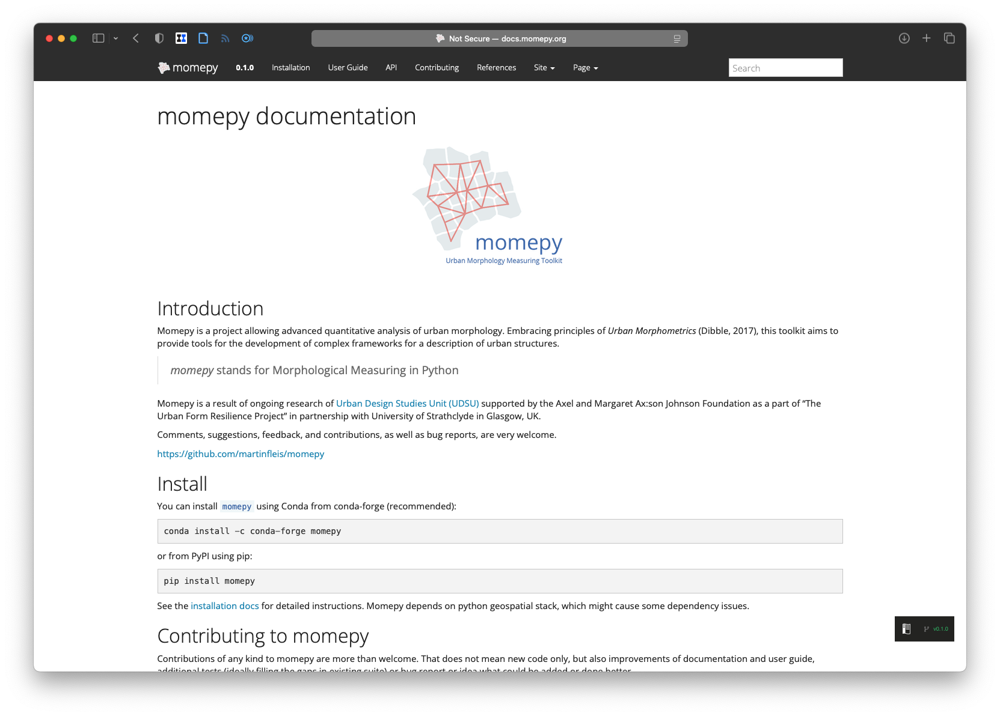
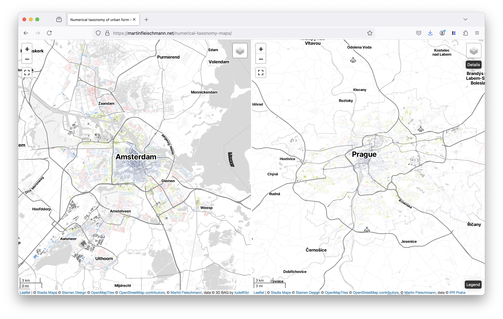
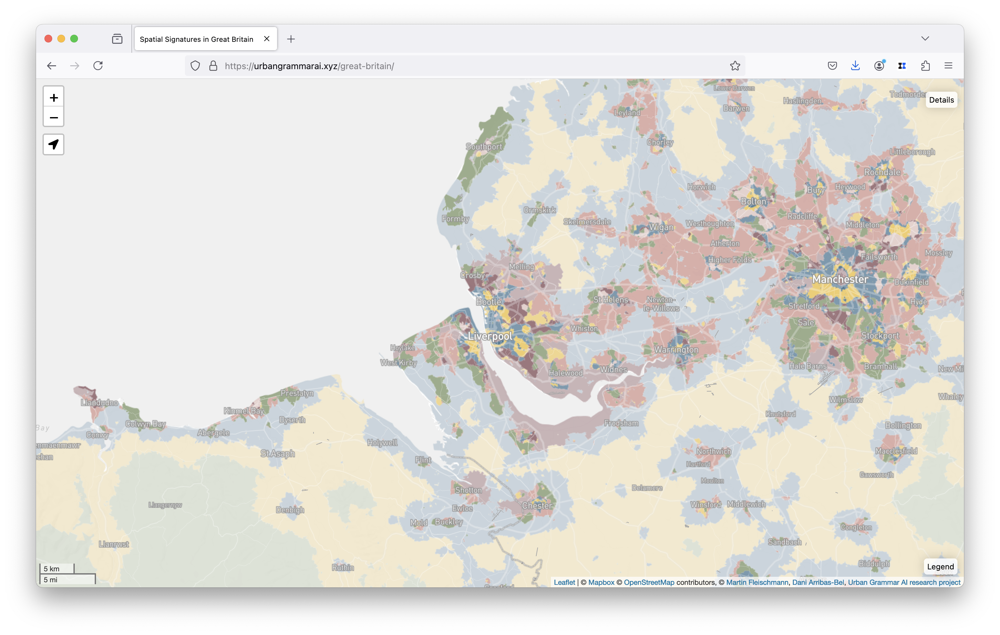
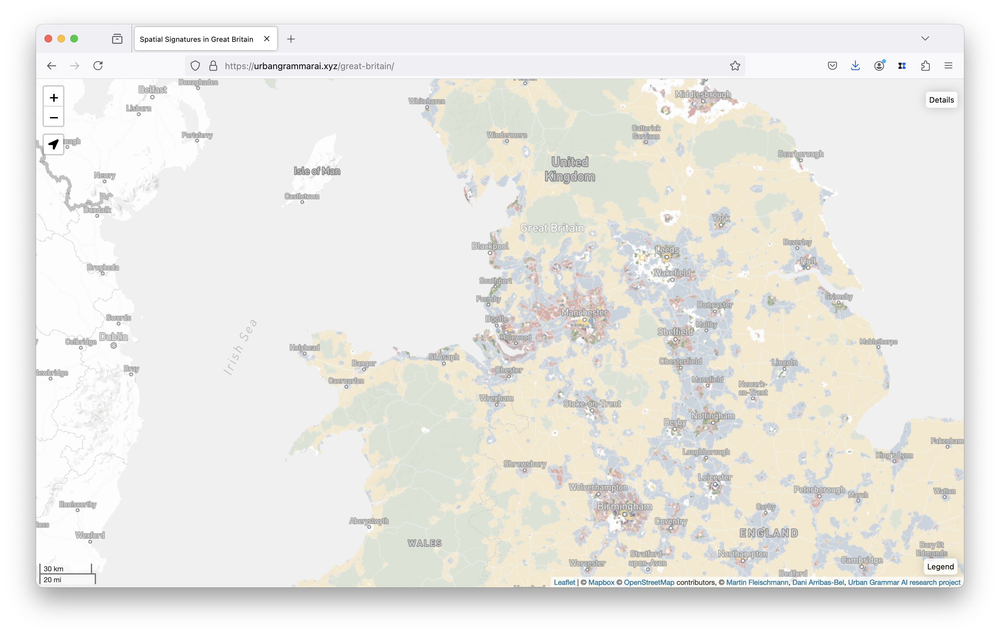
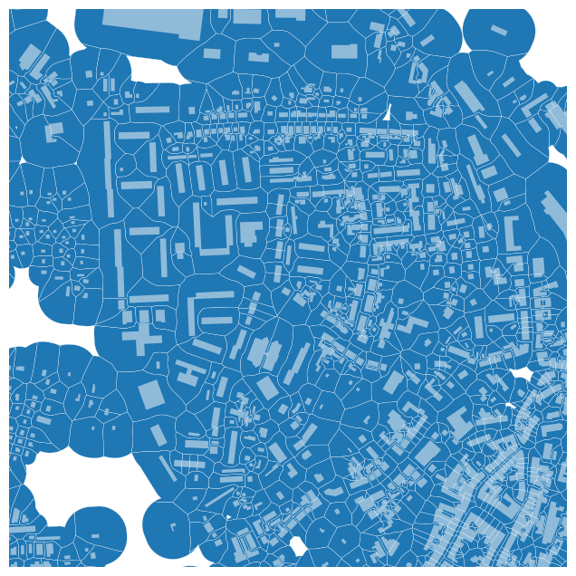
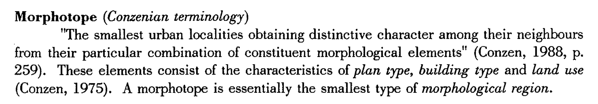

From a building to a region
Scalable morphology with urban morphometrics
Charles University
Looking back to 2019




Looking back to 2022





Today
availability of data
evolution of software
performance
automatised pre-processing
all that pushes the limits of scalability
scalable urban morphometrics
What is urban morphometrics
Not anything new!
What is urban morphometrics

What is urban morphometrics
A study of urban form through the means of quantitative assessment of its constituent elements.
Conceptually similar to historico-geographical approach.
Methodologically embedded in spatial data science and geography.
Not anything new!
But things have changed over time.
We can measure potentially hundreds of morphometric characters
- dimension
- shape
- spatial distribution
- intensity
- diversity
- connectivity


We can measure them at scale
How to scale urban morphometrics
Case of Central Europe
Caution! Work in progress.
Step 01
Split the data without breaking spatial dependency
Step 02
Avoid methodological bottlenecks
Example - morphological tessellation

But morphological tessellation is a bottleneck!
Embarrassingly parallel algorithm
Step 03
Avoid implementation bottlenecks
Vectorised geometry engine
Reimplementation of core data structures
(You don’t need to do this step. It is done and ready to be used.)
Step 04
Measure!


What is next
It depends…
Our step 05
Morphotope delineation
Morphotope


Our step 06
Baseline morphotope types
Our step 07
Extensible taxonomy of urban form


Take home points
Times have changed. Methods have changed. Concepts? Those only evolved
Urban morphology can be deeply embedded in spatial data science
Urban morphometrics can support quantitative studies done at scale
All within fully interpretable framework
Do you want to follow up